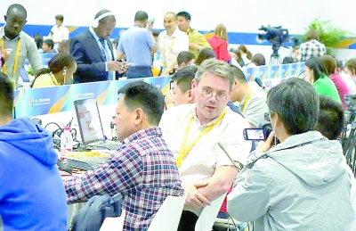

国际主流媒体高度关注“一带一路”国际合作高峰论坛
来源：光明日报 日期：2017-05-16 08:48:02

高峰论坛期间，媒体同行之间相互采访，交流报道心得和对论坛的印象。（图片来源：光明日报 记者郭红松摄）
●法国
法国《费加罗报》《世界报》《回声报》及法国国际广播电台等主流媒体均对“一带一路”国际合作高峰论坛进行了特别报道。
应邀出席此次高峰论坛的法国前总理德维尔潘在接受法国华文媒体《欧洲时报》采访时表示，习近平主席在论坛开幕式的主旨发言，阐释了以和平合作、开放包容、互学互鉴、互利共赢为核心的丝路精神，展示了把“一带一路”建成和平之路、繁荣之路、开放之路、创新之路、文明之路的信心。
《费加罗报》称，中国推出的“一带一路”倡议，目的是将中国和其他亚洲国家、欧洲、非洲等连接起来，通过在“一带一路”沿线国家进行的公路、铁路、港口和资源管线等大规模基础建设，为各国发展创造机会。
《世界报》则将报道聚焦于非洲国家积极参与“一带一路”建设。报道称，中国目前在非洲的投资及援助帮助了非洲更好地融入全球制造业，而“一带一路”将为非洲大陆带来更多的就业机会和先进技术。 法国国际广播电台报道称，借助“一带一路”这个连接亚洲、欧洲及非洲的宏大倡议，开放的中国将继续走向世界，发挥更为重要的影响力。
●美国
习近平主席14日在“一带一路”国际合作高峰论坛开幕式上发表题为《携手推进“一带一路”建设》的主旨演讲，引起美国主流媒体关注和热议。
美联社14日报道称，来自29个国家的领导人聚集在一起，推动一项可能提升中国全球影响力的“中国倡议”。该文章指出，中国不会输出社会制度和发展模式，更不会强加于人，而是致力于推进全球“经济一体化”以及各国在金融监管、反恐、安全等领域的合作。文章还援引美国前财长保尔森的话说，中国倡议的透明度、开放性能得到包括美国公司在内的全球拥抱。
美国财经有线电视新闻（CNBC）14日重点报道了中国对“一带一路”建设增加投入1000亿元人民币的承诺。该电视台称，中国将积极同“一带一路”建设沿线各国发展互利共赢的经贸伙伴关系，促进同各相关国家贸易和投资便利化，助力地区和世界经济增长。文章援引国际货币基金组织总裁拉加德的话说，长期看，中国的巨大承诺能“帮助提振全球贸易、投资和金融合作”，“通过更广泛地分享投资和知识的好处，增长会更强、更持久、更具包容性”。
彭博社14日发表文章称，中国国家主席习近平在“一带一路”国际合作高峰论坛开幕式上的主旨演讲奠定了中国倡导的新型全球化的基础，及其引领这一进程的框架。该文指出，习近平主席的主旨演讲建立了中国作为全球自由贸易领导者形象，为此次论坛奠定了基调。
《纽约时报》14日刊文介绍习近平主席在本次高峰论坛开幕式主旨演讲的主要内容，并特别援引代表美国与会的特朗普总统特别助理、国家安全委员会负责亚太事务的高级主任波廷杰的话称，“美国公司愿意参与‘一带一路’项目”。
美国有线电视新闻网（CNN）14日报道说，当美国倾向贸易保护主义之时，中国正在努力将自己放在全球化的引领位置。文章援引亚洲基础设施投资银行行长金立群的话说，美国可以参与中国实施的项目并发挥作用，无论美国是不是AIIB成员，我们都能在一起工作，大门是敞开的，中国欢迎任何成员加入。
●英国
英国主流媒体高度关注“一带一路”国际合作高峰论坛，对习近平主席在高峰论坛开幕式发表主旨演讲进行了特别报道。
英国广播公司（BBC）指出，习近平主席在讲话中提及了英国的“英格兰北方经济中心”政策，并关注到习近平主席宣布的一系列对外援助政策。报道称，英国财政大臣菲利普·哈蒙德和英国多家银行和金融机构都出席了峰会。哈蒙德在高峰论坛上致辞表示，英国想增加对外贸易，这与中方的想法一致。英方已准备好跟其他参与“一带一路”倡议的国家合作。
英国《每日电讯报》也对哈蒙德在高峰论坛致辞进行了报道。报道说，哈蒙德在致辞中表示，当中国从东方推动“一带一路”倡议时，位于西方的英国是中国的天然合作伙伴，当英国离开欧盟进入新的历史阶段时，将寻求在全球范围内达成自由贸易协定。
●土耳其
土耳其官方通讯社阿纳多卢通讯社日前发表社评《土耳其与中国在“一带一路”上相遇》。文章称，土耳其总统埃尔多安出席“一带一路”国际合作高峰论坛，土耳其与中国之间的距离将被拉近。土耳其在“一带一路”倡议中占有重要地位，土耳其参与的“跨里海中间走廊”项目与中国的“一带一路”倡议高度契合，土耳其欧亚海底隧道、伊斯坦布尔第三国际机场等项目都将成为“一带一路”建设上的重要交通项目，今年内即将完成的“巴库—第比利斯—卡尔斯”铁路项目也将成为连接中国和欧洲的重要线路。
文章还提到，为了对接中国“一带一路”建设和土耳其“中间走廊”建设，土耳其与中国早在2015年就签署了对接“一带一路”与“跨里海中间走廊”进程的谅解备忘录。
土耳其萨邦哲大学伊斯坦布尔政治中心研究员阿尔泰·阿特勒日前在阿纳多卢通讯社发表文章称，中国向中东、地中海、欧洲敞开大门，将有益于地区的长期稳定。（本报驻安卡拉记者黄昊 韩显阳 林卫光冯源整理）
（原标题：国际主流媒体高度关注“一带一路”国际合作高峰论坛）